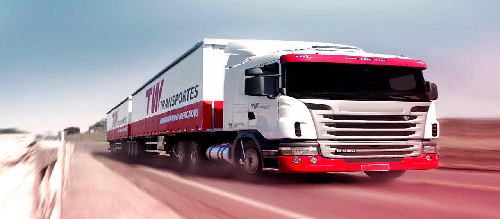

Somos una red logística comprometida con la confiabilidad y la puntualidad, dedicada a conectar negocios y personas. Exploramos constantemente nuevos mercados y servicios tanto a nivel nacional como internacional, con el objetivo de asegurar una rentabilidad sostenible que respalde nuestra solidez y permanencia a largo plazo.

Para el 2036 seremos la red logística preferida, impulsando el crecimiento de empresas y personas al facilitar el progreso con soluciones efectivas. Comprometidos con la innovación y la excelencia, estamos abiertos al mundo para explorar nuevas oportunidades y ofrecer servicios que respondan a las necesidades del mercado global.
BASE DE DATOS CARGA RAPIDA

1.Encontrar todos los documentos donde el costo sea igual a 80000"

El comando MongoDB db.transportadora.find({ costo: { $eq: 80000 } }); busca documentos en la colección transportadora donde el campo costo sea exactamente igual a 80,000. El operador $eq significa "igual a", por lo que la consulta devolverá todos los registros que tengan ese valor exacto en el campo costo. Esto es útil para identificar transportes con un costo específico de 80,000, facilitando la búsqueda de envíos con ese monto exacto.
2.Encontrar todos los documentos donde el costo sea mayor o igual a 180000

El comando MongoDB db.transportadora.find({ costo: { $gte: 180000 } }); busca documentos en la colección transportadora donde el campo costo sea mayor o igual a 180,000. El operador $gte significa "greater than or equal" (mayor o igual a), por lo que la consulta devolverá todos los registros cuyo costo sea 180,000 o superior. Esta consulta es útil para analizar los transportes más costosos, filtrando aquellos que tienen un valor igual o superior al umbral establecido.
3.Encontrar todos los documentos donde el costo sea mayor a 170000

El comando MongoDB db.transportadora.find({ costo: { $gt: 170000 } }); busca documentos en la colección transportadora donde el campo costo sea mayor a 170,000. El operador $gt significa "greater than" (mayor que), por lo que la consulta devolverá todos los registros cuyo costo supere los 170,000. Esto es útil para identificar y analizar transportes cuyo costo es superior a ese umbral, permitiendo enfocar la atención en los envíos más caros.
4.Encontrar todos los documentos donde el costo sea menor a 35000

El comando MongoDB db.transportadora.find({ costo: { $lt: 35000 } }); busca documentos en la colección transportadora donde el campo costo sea menor a 35,000. El operador $lt significa "less than" (menor que), por lo que la consulta devolverá todos los registros cuyo costo sea inferior a 35,000. Esto es útil para identificar y analizar transportes que tienen un costo bajo, facilitando la evaluación de opciones de transporte más económicas.
5.Encontrar todos los documentos donde el costo esté en el rango de 20000 a 50000

El comando MongoDB db.transportadora.find({ costo: { $in: [20000, 30000, 40000, 50000] } }); busca documentos en la colección transportadora donde el campo costo coincida con cualquiera de los valores especificados en el array [20000, 30000, 40000, 50000]. El operador $in se utiliza para seleccionar documentos cuyos valores en el campo costo estén dentro de ese conjunto de valores. Esta consulta es útil para recuperar transportes con costos específicos de 20,000, 30,000, 40,000 o 50,000, permitiendo filtrar por varios montos exactos.
6.Encontrar todos los documentos donde el costo sea menor o igual a 30000

El comando MongoDB db.transportadora.find({ costo: { $lte: 30000 } }); busca documentos en la colección transportadora donde el campo costo sea menor o igual a 30,000. El operador $lte significa "less than or equal to" (menor o igual a), por lo que la consulta devolverá todos los registros cuyo costo sea 30,000 o inferior. Esto es útil para identificar transportes con costos bajos o accesibles, ayudando a enfocar la atención en opciones económicas.
7.Encontrar todos los documentos donde el estado no sea 'Entregado' y su destino sea "Barranquilla"

El comando MongoDB db.transportadora.find({ estado: { $ne: 'Entregado' }, destino: 'Barranquilla' }); busca documentos en la colección transportadora que cumplan dos condiciones simultáneamente. Filtra los documentos donde el campo estado no sea 'Entregado' (usando el operador $ne que significa "not equal") y donde el campo destino sea 'Barranquilla'. Esto permite recuperar registros de transporte cuyo destino es Barranquilla y que aún no han sido entregados, facilitando la identificación de envíos que están en proceso o pendientes para ese destino específico.
8.Encontrar todos los documentos donde se tenga en la lista 'Domesa', 'BY TREND'

El comando MongoDB db.transportadora.find({$and: [ { TipoTransporte: { $ne: 'aéreo' } }, { origen: 'Cúcuta' }]}); busca documentos en la colección transportadora que cumplan dos condiciones simultáneamente. Primero, filtra los documentos donde el campo TipoTransporte no sea 'aéreo' y, segundo, selecciona solo aquellos cuyo campo origen sea 'Cúcuta'. Así, el comando recupera registros de transporte que no utilizan el modo aéreo y que tienen Cúcuta como punto de origen, lo cual puede ser útil para analizar opciones de transporte terrestre desde esa ciudad.
9.Encontrar todos los documentos donde el tipo de servicio sea 'Paquetería' y el estado sea 'En tránsito'

El comando MongoDB db.transportadora.find({ $and: [{ tipoServicio: 'Paquetería' }, { estado: 'En tránsito' }] }); busca documentos en la colección transportadora que cumplan ambas condiciones simultáneamente. Filtra aquellos documentos donde el campo tipoServicio sea 'Paquetería' y el campo estado sea 'En tránsito'. Esto recupera los registros de transporte que están en curso (en tránsito) y que ofrecen un servicio de paquetería, lo cual puede ser útil para gestionar o analizar envíos actuales de ese tipo de servicio.
10.Encontrar todos los documentos donde el tipo de servicio sea 'Logística' o 'Carga' y tengan de origen Bucaramanga

El comando MongoDB db.transportadora.find({ tipoServicio: { $in: ['Logística', 'Carga'] }, origen: 'Bucaramanga' }); busca documentos en la colección transportadora que cumplan dos condiciones. Primero, filtra aquellos documentos donde el campo tipoServicio sea 'Logística' o 'Carga' (utilizando el operador $in para especificar varios valores posibles). Segundo, selecciona solo los documentos cuyo campo origen sea 'Bucaramanga'. Esto permite recuperar registros de transporte que ofrecen servicios de logística o carga y que tienen Bucaramanga como punto de origen, facilitando la identificación de transportes específicos para esa ciudad.
11.Encontrar todos los envios que sean diferentes a transporte "aéreo" y sean desde "Cúcuta"

El comando MongoDB db.transportadora.find({$and: [ { TipoTransporte: { $ne: 'aéreo' } }, { origen: 'Cúcuta' }]}); busca documentos en la colección transportadora que cumplan dos condiciones simultáneamente. Primero, filtra los documentos donde el campo TipoTransporte no sea 'aéreo' y, segundo, selecciona solo aquellos cuyo campo origen sea 'Cúcuta'. Así, el comando recupera registros de transporte que no utilizan el modo aéreo y que tienen Cúcuta como punto de origen, lo cual puede ser útil para analizar opciones de transporte terrestre desde esa ciudad.
12.Encontrar todos los documentos donde el destino sea 'Bogotá' y el estado sea 'Pendiente'

El comando MongoDB db.transportadora.find({ $and: [{ destino: 'Bogotá' }, { estado: 'Pendiente' }] }); recupera documentos de la colección transportadora que cumplen dos condiciones simultáneamente. Filtra los documentos cuyo campo destino es 'Bogotá' y cuyo campo estado es 'Pendiente'. Es decir, busca registros de transporte destinados a Bogotá que aún están pendientes, lo cual puede ser útil para identificar y gestionar envíos que necesitan atención o seguimiento en ese destino específico.
13.Encontrar todos los documentos donde el costo sea entre 100000 y 200000, excluyendo aquellos con estado 'En tránsito':

El comando MongoDB db.transportadora.find({ $and: [{ costo: { $gte: 100000, $lte: 200000 } }, { estado: { $ne: 'En tránsito' } }] }); busca documentos en la colección transportadora que cumplan dos condiciones simultáneamente. Primero, filtra aquellos documentos en los que el campo costo esté entre 100,000 y 200,000 (inclusive). Segundo, excluye los documentos cuyo campo estado sea 'En tránsito'. Así, la consulta recupera registros de transporte con un costo dentro del rango especificado y que no estén actualmente en tránsito, lo cual puede ser útil para analizar costos de transporte que ya han sido completados o están en un estado diferente.
14.Encontrar todos los documentos donde el cliente sea 'La Cali' o el destino sea 'Nariño':

El comando MongoDB db.transportadora.find({ $or: [{ nombre: 'La Cali' }, { destino: 'Nariño' }] }); busca documentos en la colección transportadora que cumplan al menos una de las dos condiciones. Utiliza el operador $or para filtrar documentos donde el campo nombre sea 'La Cali' o donde el campo destino sea 'Nariño'. El resultado incluirá tanto transportes realizados por la empresa con el nombre 'La Cali', como aquellos cuyo destino sea 'Nariño', cubriendo ambas posibilidades en una sola consulta. Esto es útil para obtener una visión más amplia de los transportes basados en el nombre o el destino.
15.Encontrar todos los documentos donde el costo sea exactamente 35000 y el estado sea 'Entregado'

El comando MongoDB db.transportadora.find({ $and: [{ costo: 35000 }, { estado: 'Entregado' }] }); busca documentos en la colección transportadora que cumplan ambas condiciones simultáneamente. Filtra aquellos documentos cuyo campo costo sea exactamente 35,000 y cuyo campo estado sea 'Entregado'. Esto permite identificar los transportes que han sido entregados y cuyo costo fue de 35,000, lo que puede ser útil para analizar entregas específicas con un valor fijo.
16.Encontrar todos los documentos donde el tipo de servicio sea 'Carga' y el costo sea mayor a 150000"

El comando MongoDB db.transportadora.find({ $and: [{ tipoServicio: 'Carga' }, { costo: { $gt: 150000 } }] }); busca documentos en la colección transportadora que cumplan dos condiciones simultáneamente. Filtra aquellos documentos donde el campo tipoServicio sea 'Carga' y el campo costo sea mayor a 150,000. Esto recupera transportes que ofrecen servicios de carga cuyo costo excede los 150,000, permitiendo analizar envíos más costosos dentro de ese tipo de servicio.
17.Encontrar todos los documentos donde el nombre sea 'Valladolid' y el estado sea 'En tránsito'"

El comando MongoDB db.transportadora.find({ $and: [{ nombre: 'Valladolid' }, { estado: 'En tránsito' }] }); busca documentos en la colección transportadora que cumplan dos condiciones simultáneamente. Filtra los documentos donde el campo nombre sea 'Valladolid' y el campo estado sea 'En tránsito'. Esto permite obtener registros de transportes que están en curso (en tránsito) y que son realizados por la empresa o servicio denominado 'Valladolid', útil para monitorear transportes activos de esa empresa.
18.Encontrar todos los documentos donde el tipo de servicio sea 'Paquetería' y el origen sea 'Bogotá'
El comando MongoDB db.transportadora.find({$and: [ { TipoTransporte: { $ne: 'aéreo' } }, { origen: 'Cúcuta' }]}); busca documentos en la colección transportadora que cumplan dos condiciones simultáneamente. Primero, filtra los documentos donde el campo TipoTransporte no sea 'aéreo' y, segundo, selecciona solo aquellos cuyo campo origen sea 'Cúcuta'. Así, el comando recupera registros de transporte que no utilizan el modo aéreo y que tienen Cúcuta como punto de origen, lo cual puede ser útil para analizar opciones de transporte terrestre desde esa ciudad.
19.Encontrar todos los documentos donde el costo sea menor a 60000 y el tipo de transporte sea 'terrestre'"

El comando MongoDB db.transportadora.find({ $and: [ { costo: { $lt: 60000 } }, { TipoTransporte: 'aéreo' }] }); busca documentos en la colección transportadora que cumplan dos condiciones simultáneamente. Filtra aquellos documentos donde el campo costo sea menor a 60,000 y el campo TipoTransporte sea 'aéreo'. Esto permite recuperar transportes aéreos cuyo costo sea inferior a 60,000, útil para analizar opciones de transporte aéreo más económicas.
20.Encontrar todos los envios que tengan de destino "Tumaco" y tengan un tipo de transporte "aéreo"

El comando MongoDB db.transportadora.find({ destino: "Tumaco", TipoTransporte: "aéreo" }).pretty(); busca documentos en la colección transportadora que cumplan dos condiciones: aquellos en los que el campo destino sea 'Tumaco' y el campo TipoTransporte sea 'aéreo'. La función .pretty() formatea la salida para que sea más legible. Esta consulta es útil para identificar transportes aéreos cuyo destino final sea Tumaco, lo que puede ayudar a gestionar o analizar envíos específicos hacia esa ciudad.